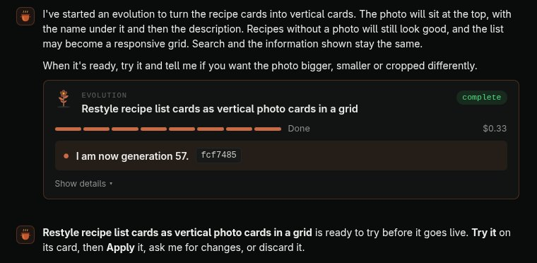
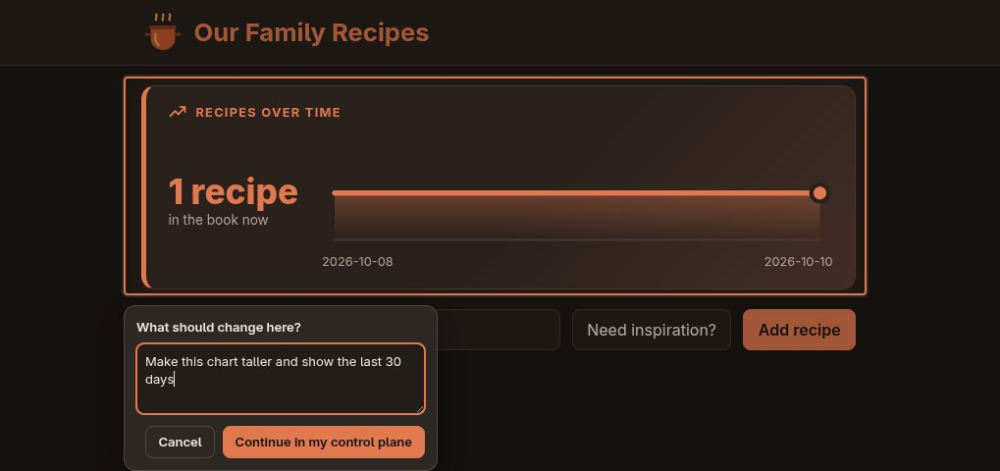
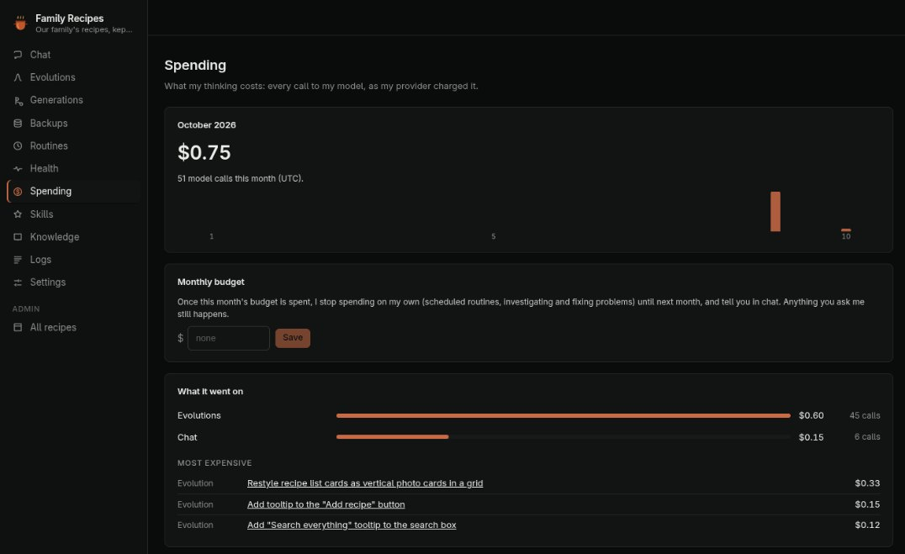
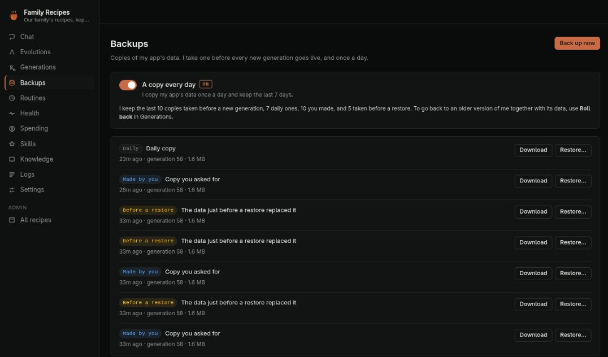

Point and ask
Hover the little seed on your app, drag a box around anything and say what should change. It gets a picture of exactly that.
Open source · MPL-2.0
Plant a Seed and tell it what to become. It writes the code, tests it, lets you try it on a copy of your data, and only then goes live, as a new generation you can always roll back.
curl -fsSL https://raw.githubusercontent.com/paezao/seed/main/install.sh | sh
seed new recipes -e OPENROUTER_API_KEY
On it. Here's my plan: a recipes table, a page to add them, and search across everything.
I am now generation 2: Family Recipes. 12 tests pass.
Every change is a generation: planned, built in a sandbox, tested, tried by you, then live. Nothing is ever overwritten.
seed new recipes gives you a folder with a kernel, a database and an empty app. It starts in its own container.
Tell it what to become in chat, or point at part of the app and say what should change. It asks before guessing.
It builds and tests the change on a scratch database, then lets you try it on a copy of your real data.
Apply it and it's a new generation: a git commit, with a backup of your data taken first. Roll back any time.
The kernel does the boring, careful parts, so every app a Seed becomes gets them for free.
Hover the little seed on your app, drag a box around anything and say what should change. It gets a picture of exactly that.
Each change runs beside the live app on a copy of your data. Apply it, ask for changes, or throw it away.
Your data is copied before every change goes live, and daily. Go back to any generation, and to its data too.
It notices errors and crashes, restarts what fell over, finds the cause and fixes it with a test that proves it.
Tasks it runs on a schedule and reports on, and jobs your app runs, like a weekly digest or a nightly cleanup.
Every model call is counted. Watch an evolution's cost tick up live, and set a monthly budget for what it does alone.
Notifications on your laptop and phone when a change is ready to try, it has a question, or it found a problem.
Your app has no network except HTTPS to hosts you approve, with only the secrets you grant. Risky actions wait for you.
New kernels arrive as signed releases you install from the control plane. If one fails to start, it rolls back on its own.




DATABASE_URL.Seed is open source under the MPL-2.0. The app your Seed becomes is yours, under the MIT license: take it anywhere. A Seed runs anywhere Docker does: your laptop, a VPS, or Kubernetes, with a volume and optionally an external database.
curl -fsSL https://raw.githubusercontent.com/paezao/seed/main/install.sh | sh
Needs Docker. Or build it yourself: git clone https://github.com/paezao/seed && cd seed && make install